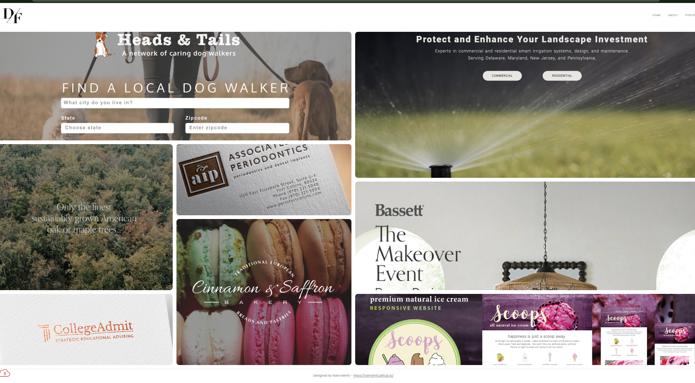

Peer Review 1
Merritt, Nate

Evaluation
- Submission Link: The link loads successfully but leads to a portfolio landing page instead of a single client project. It would be clearer if it linked directly to the specific client project.
- File Naming: File paths appear consistent and properly formatted using lowercase and no spaces.
-
Design:
- Contrast and readability are generally acceptable, though some areas could be improved for clarity.
- Color and font usage appears consistent across the page.
-
CRAP Principles:
- Contrast: Mostly effective but could be improved in certain areas
- Repetition: Consistent use of styles and layout
- Alignment: Clean overall, minor spacing adjustments could help
- Proximity: Content is grouped logically
-
Page Structure:
- Header present
- Main section present
- Footer present
- Header: Appears to follow structure guidelines, though branding clarity could be strengthened.
- Main Content: Uses appropriate structure, but the purpose of the page could be clearer to guide the viewer to the intended client project.
- Branding: Some consistency is present, but adding a clearer identity or slogan would improve cohesion.
- Footer: Should include navigation and validation links; verify that both HTML and CSS validation links are present and working.
- Assignment Requirements: The project shows progress with multiple client examples, but should more clearly highlight the specific client project for this assignment stage.
- Strengths: The portfolio layout is organized and shows multiple completed works, which gives a professional feel.
- Suggestions: Improve clarity by directing users immediately to the intended client project and refining visual hierarchy.
- Stop: Stop requiring the user to guess which project is being evaluated.
- Start: Start linking directly to the required client project page and include a short description of the client and project goals.
- Continue: Continue using a structured layout and organized project listing, as it strengthens presentation.